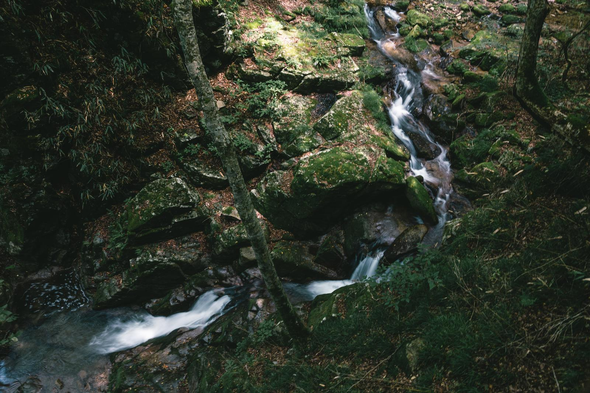

筑波嶺の
峰より落つる
男女川（みなのがは）
恋ぞつもりて
淵となりぬる
陽成院
訳：筑波山から流れ落ちる男女川が次第に水量を増して深くなるように、私の恋心も時とともに深まり、今では淵のように深くなってしまった。
舞台：茨城県「筑波山」「男女川」
鑑賞：筑波山は古代から恋の山として知られてきました。山頂は男体山と女体山の二つに分かれており、そこから流れ出す川には「男女川」という名前がついています。「つくばね」の「つく」には、相手側に「付く」という意味も。当時の宮中には、東国は「素朴な土地」というイメージがあり、そんな地域にある筑波山は、清純で素直な恋心を詠うこの歌の印象とよく合っています。
豆知識：筑波山頂からは関東平野を一望でき、四季折々の風景が楽しめます。
アクセス＆お得なチケットはこちら